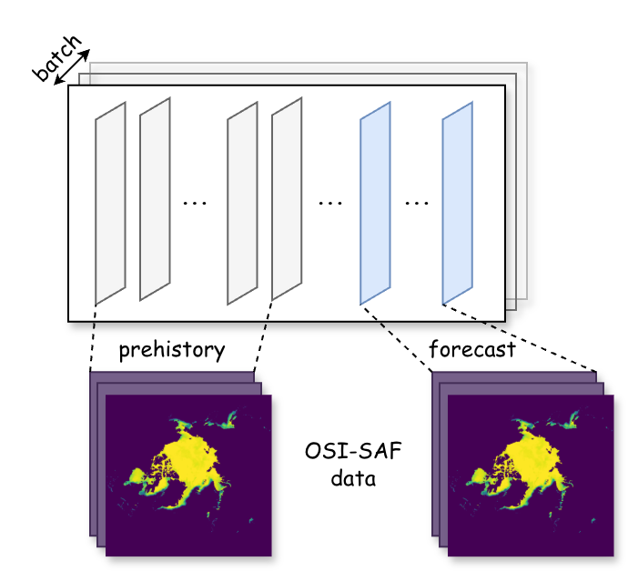

preprocess
Bases: Dataset
Convert a time series into (X, Y) pairs using sliding windows.
X represents past observations of length pre_history_len,
Y represents future observations of length forecast_len.

The dataset is generated lazily: windows are sliced on demand from the original tensor without materializing the full dataset in memory. The time dimension is assumed to be the first axis of the input tensor.
Parameters:
| Name | Type | Description | Default |
|---|---|---|---|
data
|
`Sequence`
|
Time series data of shape |
required |
pre_history_len
|
`int`
|
Number of time steps in each input window (X). |
required |
forecast_len
|
`int`
|
Number of time steps in each output window (Y). |
required |
idx
|
`Sequence`
|
Optional sequence of any indeces corresponding
to each time step in |
None
|
threshold
|
`float`
|
If provided, binarizes the target tensor Y using this threshold. Values strictly greater than the threshold are set to 1, and values less than or equal to the threshold are set to 0. Defaults to None. |
None
|
x_binarize
|
`bool`
|
If True and |
False
|
device
|
`str`
|
Device on which to place the tensors (e.g., "cpu", "cuda"). Defaults to None. |
None
|
dtype
|
dtype
|
Data type used to convert the input sequence. Defaults to torch.float32. |
float32
|
Source code in src/aiice/preprocess.py
37 38 39 40 41 42 43 44 45 46 47 48 49 50 51 52 53 54 55 56 57 58 59 60 61 62 63 64 65 66 67 68 69 70 71 72 73 74 75 76 77 78 79 80 81 82 83 84 85 86 87 88 89 90 91 92 93 94 95 96 97 98 99 100 101 102 103 104 105 106 107 108 109 110 111 112 113 114 115 116 117 118 119 120 121 122 123 124 125 126 127 128 129 130 131 132 | |
apply_threshold(tensor: Tensor, threshold: float = 0.5) -> torch.Tensor
Binarize tensor with a threshold
Source code in src/aiice/preprocess.py
7 8 9 | |
apply_downsample(t: Tensor, i: int, axes: tuple[int, ...] = (-1,)) -> torch.Tensor
Downsample a tensor by keeping every i-th element along specified axes.
Parameters:
| Name | Type | Description | Default |
|---|---|---|---|
t
|
`torch.Tensor`
|
Input tensor. |
required |
i
|
`int`
|
Step for downsampling. Must be greater than 0. |
required |
axes
|
`tuple[int]`
|
Axes along which to downsample. Negative axes are supported. |
(-1,)
|
Source code in src/aiice/preprocess.py
12 13 14 15 16 17 18 19 20 21 22 23 24 25 26 27 28 29 30 31 32 33 34 | |